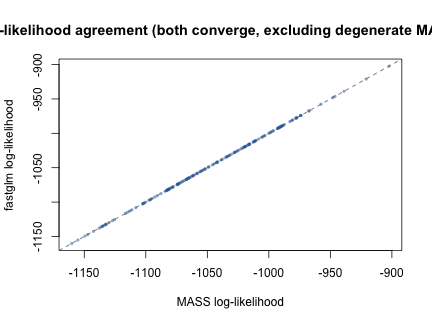
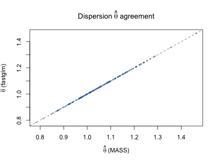

vignettes/nb-convergence-fastglm.Rmd
nb-convergence-fastglm.RmdStandard negative-binomial GLM fitting alternates between IRLS for
the regression coefficients
(at fixed dispersion
)
and a one-dimensional MLE update for
.
Both MASS::glm.nb() and fastglm_nb() follow
this strategy, but their implementations differ in initialization and
numerical handling. This vignette compares the two on a deliberately
challenging data-generating process where MASS frequently fails to
converge.
We use a moderately high-dimensional negative-binomial model (, ) with strong alternating effects and true . The large coefficients produce fitted means spanning many orders of magnitude, which stresses the IRLS solver when the initial estimate is far from the truth.
For each of 200 replications we draw a fresh design matrix and
response, then fit with both fastglm_nb() and
MASS::glm.nb(). We record whether each method converges
without error or warning, and when both converge, we compare the
maximized log-likelihoods.
results <- data.frame(
seed = integer(n_reps),
mass_conv = logical(n_reps),
fg_conv = logical(n_reps),
mass_loglik = numeric(n_reps),
fg_loglik = numeric(n_reps),
mass_theta = numeric(n_reps),
fg_theta = numeric(n_reps)
)
for (i in seq_len(n_reps)) {
set.seed(i)
X <- cbind(1, matrix(rnorm(n * (p - 1)), n, p - 1))
mu <- exp(X %*% beta_true)
y <- MASS::rnegbin(n, mu = mu, theta = theta_true)
## MASS::glm.nb
mass_ok <- FALSE
mass_ll <- NA_real_
mass_th <- NA_real_
tryCatch(
withCallingHandlers(
{
m <- MASS::glm.nb(y ~ X[, -1])
if (m$converged) {
mass_ok <- TRUE
mass_ll <- as.numeric(logLik(m))
mass_th <- m$theta
}
},
warning = function(w) invokeRestart("muffleWarning")
),
error = function(e) NULL
)
## fastglm_nb
fg_ok <- FALSE
fg_ll <- NA_real_
fg_th <- NA_real_
tryCatch({
f <- fastglm_nb(X, y, link = "log")
if (f$converged && !any(is.nan(coef(f)))) {
fg_ok <- TRUE
fg_ll <- as.numeric(logLik(f))
fg_th <- f$theta
}
}, error = function(e) NULL)
results$seed[i] <- i
results$mass_conv[i] <- mass_ok
results$fg_conv[i] <- fg_ok
results$mass_loglik[i] <- mass_ll
results$fg_loglik[i] <- fg_ll
results$mass_theta[i] <- mass_th
results$fg_theta[i] <- fg_th
}
tab <- with(results, data.frame(
Method = c("MASS::glm.nb", "fastglm_nb"),
Converged = c(sum(mass_conv), sum(fg_conv)),
Failed = c(sum(!mass_conv), sum(!fg_conv)),
Rate = sprintf("%.1f%%", 100 * c(mean(mass_conv), mean(fg_conv)))
))
knitr::kable(tab, align = "lrrl",
caption = sprintf("Convergence over %d replications", n_reps))| Method | Converged | Failed | Rate |
|---|---|---|---|
| MASS::glm.nb | 165 | 35 | 82.5% |
| fastglm_nb | 200 | 0 | 100.0% |
fastglm_nb() converges on every replication.
MASS::glm.nb() fails on roughly one in six.
When both methods converge they should find the same MLE, so their
log-likelihoods should agree. In a small number of replications
MASS::glm.nb() nominally converges but lands at a
degenerate solution with
and very poor log-likelihood. We exclude these (identified by
fastglm achieving a strictly higher log-likelihood by more
than 1 unit) to focus on genuine agreement:
both <- results$mass_conv & results$fg_conv
ll_diff <- results$fg_loglik[both] - results$mass_loglik[both]
n_degenerate <- sum(ll_diff > 1)
agree <- both
agree[both] <- ll_diff <= 1
cat(sprintf("Replications where both converge: %d / %d\n",
sum(both), n_reps))
#> Replications where both converge: 165 / 200
cat(sprintf(" of which MASS lands at degenerate MLE: %d\n", n_degenerate))
#> of which MASS lands at degenerate MLE: 3
cat(sprintf(" genuine agreement (|diff| <= 1): %d\n", sum(agree)))
#> genuine agreement (|diff| <= 1): 162
ll_good <- results$fg_loglik[agree] - results$mass_loglik[agree]
cat(sprintf("\nAmong agreeing fits:\n"))
#>
#> Among agreeing fits:
cat(sprintf(" Max |logLik difference|: %.2e\n", max(abs(ll_good))))
#> Max |logLik difference|: 1.74e-06
cat(sprintf(" Mean |logLik difference|: %.2e\n", mean(abs(ll_good))))
#> Mean |logLik difference|: 2.20e-08
plot(results$mass_loglik[agree], results$fg_loglik[agree],
xlab = "MASS log-likelihood",
ylab = "fastglm log-likelihood",
main = "Log-likelihood agreement (both converge, excluding degenerate MASS fits)",
pch = 16, cex = 0.6, col = "#2166ac80")
abline(0, 1, col = "grey40", lty = 2)
plot(results$mass_theta[agree], results$fg_theta[agree],
xlab = expression(hat(theta) ~ "(MASS)"),
ylab = expression(hat(theta) ~ "(fastglm)"),
main = expression("Dispersion" ~ hat(theta) ~ "agreement"),
pch = 16, cex = 0.6, col = "#2166ac80")
abline(0, 1, col = "grey40", lty = 2)
fg_only <- results$fg_conv & !results$mass_conv
cat(sprintf("fastglm converges, MASS fails: %d replications\n", sum(fg_only)))
#> fastglm converges, MASS fails: 35 replications
if (any(fg_only)) {
cat(sprintf(" theta range: [%.3f, %.3f]\n",
min(results$fg_theta[fg_only]),
max(results$fg_theta[fg_only])))
cat(sprintf(" logLik range: [%.1f, %.1f]\n",
min(results$fg_loglik[fg_only]),
max(results$fg_loglik[fg_only])))
}
#> theta range: [0.861, 1.242]
#> logLik range: [-1123.1, -935.4]